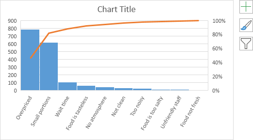
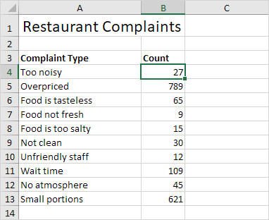
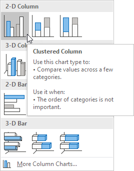
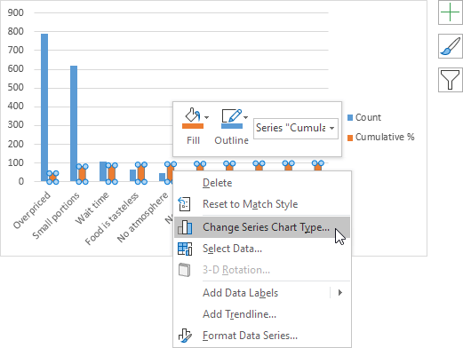

Pareto Chart
Excel 2016 or later | All Versions
This example teaches you how to create a Pareto chart in Excel. The Pareto principle states that, for many events, roughly 80% of the effects come from 20% of the causes. In this example, we will see that roughly 80% of the complaints come from 20% of the complaint types.
Excel 2016 or later
To create a Pareto chart in Excel 2016 or later, execute the following steps.
1. Select the range A3:B13.
2. On the Insert tab, in the Charts group, click the Histogram symbol.

3. Click Pareto.
Result:

Note: a Pareto chart combines a column chart and a line graph.
4. Enter a chart title.
5. Click the + button on the right side of the chart and click the check box next to Data Labels.
Result:
Conclusion: the orange Pareto line shows that (789 + 621) / 1722 ≈ 80% of the complaints come from 2 out of 10 = 20% of the complaint types (Overpriced and Small portions). In other words: the Pareto principle applies.
All Versions
If you don't have Excel 2016 or later, simply create a Pareto chart by combining a column chart and a line graph. This method works with all versions of Excel.
1. First, select a number in column B.

2. Next, sort your data in descending order. On the Data tab, in the Sort & Filter group, click ZA.

3. Calculate the cumulative count. Enter the formula shown below into cell C5 and drag the formula down.

4. Calculate the cumulative %. Enter the formula shown below into cell D4 and drag the formula down.
Note: cell C13 contains the total number of complaints. When we drag this formula down, the absolute reference ($C$13) stays the same, while the relative reference (C4) changes to C5, C6, C7, etc.
5. Select the data in column A, B and D. To achieve this, hold down CTRL and select each range.
6. On the Insert tab, in the Charts group, click the Column symbol.

7. Click Clustered Column.

8. Right click on the orange bars (Cumulative %) and click Change Series Chart Type...

The Change Chart Type dialog box appears.
9. For the Cumulative % series, choose Line with Markers as the chart type.
10. Plot the Cumulative % series on the secondary axis.
11. Click OK.
Note: Excel 2010 does not offer combo chart as one of the built-in chart types. If you're using Excel 2010, instead of executing steps 8-10, simply select Line with Markers and click OK. Next, right click on the orange/red line and click Format Data Series. Select Secondary Axis and click Close.
12. Right click the percentages on the chart, click Format Axis and set the Maximum to 100.
Result:
Conclusion: the Pareto chart shows that 80% of the complaints come from 20% of the complaint types (Overpriced and Small portions). In other words: the Pareto principle applies.